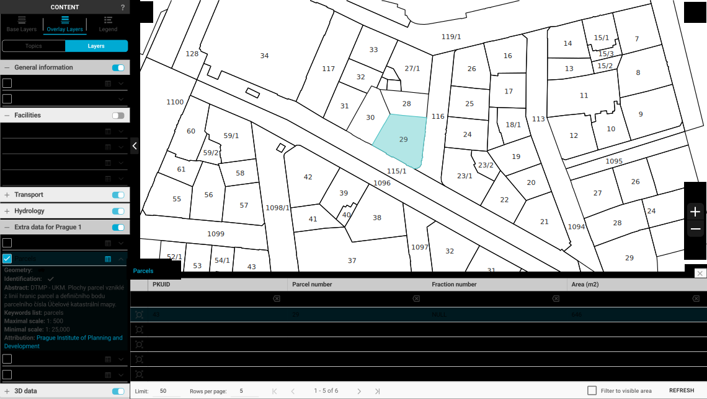

Introduction¶
Dear user, welcome to Gisquick documentation! Gisquick (http://gisquick.org) is an open-source geospatial data platform for publishing geospatial data in terms of rapid sharing QGIS projects. Explore more to see how easy yet powerful is working in Gisquick.
There are few topics you might be interested in. Firstly, if you are about to publish your QGIS project online, see chapter 1. Creating account to 4. Releasing project. Please notice that there are two alternative approaches of publishing so the choice must be made which one to follow (chapter 2. Traditional publishing or 3. Experimental publishing). Together with every released project, web map service (WMS) is created and can be subsequently modified.
If you wonder what does the output look like or which features are involved, check chapter 5. User interface. Browse chapter 6. Sample datasets for metadata of example datasets which were used for documentation. If you plan to operate Gisquick publication server on your own hardware, see chapter 7. Other.
{kind=link}
1. Creating account¶
It is necessary to create an account.
2. Traditional publishing¶
Whether to follow traditional way of publishing depends only on user. Nevertheless, both ways have its
pros & cons. Definitely, the traditional approach is a good point to start, since it uses the Gisquick plugin
 , which has been tested for a long time.
Anyway, please read short description of experimental approach either to consider which one to follow.
, which has been tested for a long time.
Anyway, please read short description of experimental approach either to consider which one to follow.
2.1 Preparing project¶
How to proceed in QGIS.
2.2 Uploading project¶
How to upload prepared project created in plugin to server.
3. Experimental publishing¶
Experimental way of publishing is kind of innovative approach to Gisquick. New plugin  is involved.
In comparison to traditional approach, it allows user to easily edit published projects; every change made in
project in QGIS can be reflected in Gisquick by activating plugin which enables user to compare local and cloud
project’s folders, layer by layer.
is involved.
In comparison to traditional approach, it allows user to easily edit published projects; every change made in
project in QGIS can be reflected in Gisquick by activating plugin which enables user to compare local and cloud
project’s folders, layer by layer.
3.1 Preparing project¶
How to proceed in QGIS.
3.2 Uploading project¶
How to connect to the server directly from QGIS and upload project.
4. Releasing project¶
Last few steps of publishing process are identical for both traditional and experimental way.
5. User interface¶
Each component involved in UI is described in this chapter.
6. Sample datasets¶
Basic information about datasets which were used for documentation.
7. Other¶
Interesting links to video tutorials, used technologies or source code.
Note
Gisquick has been originally developed for GIS.lab system with aim to produce generally usable web client interface. Later it was separated into a new independent project usable with or without GIS.lab infrastructure.
Summarized chapters and subchapters as they appear in left side menu.